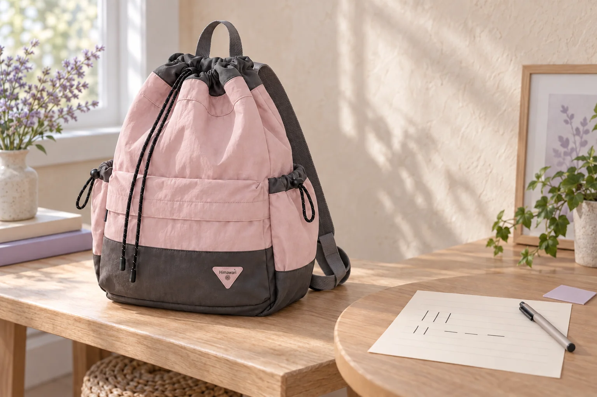

손글씨 연습에서 다음 줄에 바꿔볼 한 자리

손글씨 연습지를 보고 '전체가 마음에 들지 않는다'고 적으면 다음 줄에서 무엇을 바꿀지 정하기 어렵습니다. 글자의 모양과 크기, 낱말 사이의 간격이 한꺼번에 눈에 들어오기 때문입니다. 이번에는 다시 볼 자리 하나를 골라 표시해봅니다. 다음 줄의 시도를 구체적으로 남기면 지난 종이를 펼쳤을 때 왜 연습했는지 읽을 수 있습니다.
처음부터 잘 쓴 줄을 찾아야 할 필요는 없습니다. 자신이 읽으며 망설였던 글자 하나나 유독 좁아 보이는 간격을 짚을 수 있습니다. 어디가 문제인지 말하기 어렵다면 마음에 드는 부분과 비교할 수도 있습니다. 두 줄의 차이를 직접 본 말로 적으면 됩니다. 다른 사람의 글씨체를 기준으로 모든 획을 평가하기 전에 내 종이에서 다시 볼 대상을 정합니다.
평가를 다음 동작으로 바꾸기
예를 들어 한 낱말에서 두 글자가 붙어 보인다면 그 사이를 다음 연습의 대상으로 삼습니다. '간격 확인'이라는 말만 남기기보다 어느 줄의 어느 자리인지 적어보세요. 종이에 표시해도 되는 개인 연습지라면 작은 원이나 밑줄을 둘 수 있습니다. 원본을 그대로 두고 싶으면 별도 메모에 줄 번호와 낱말을 적습니다.
바꾸어볼 내용은 실제로 시도할 수 있는 말로 씁니다. '예쁘게 쓰기'보다 '두 글자 사이를 조금 넓혀 보기'가 다음 동작으로 옮기기 쉽습니다. 이 표현은 일정한 비율을 따르라는 교정 기준이 아닙니다. 자신이 읽기 편한 모양을 찾기 위한 제안입니다. 사용하는 글씨 수업의 기준이 있다면 그 기준과 어떤 부분을 비교할지도 확인합니다.
같은 짧은 낱말을 몇 번 써보되 모든 조건을 한꺼번에 바꾸지 않습니다. 간격을 보고 싶다면 크기와 기울기는 의도적으로 다시 고치려 하지 않고 적어볼 수 있습니다. 실제로 다른 부분도 달라졌다면 그것을 관찰에 남기면 됩니다. 한 조건을 정했다는 이유로 나머지가 완전히 같았다고 단정할 필요는 없습니다.
가상 연습으로 '오늘'이라는 낱말을 두 줄에 써볼 수 있습니다. 첫 줄은 평소처럼 쓰고 둘째 줄에서는 글자 사이의 공간만 더 두어봅니다. 이어서 내가 어떤 줄을 더 빨리 읽었는지, 마음에 드는 모양은 어느 쪽인지 살펴봅니다. 이런 비교가 특정 글씨체의 정답을 알려주지는 않습니다. 다음 연습에서 유지하거나 다시 바꿀 지점을 정하는 자료가 됩니다.
결과를 보고 '좋아졌다'고만 적지 말고 달라진 부분을 짚습니다. 간격은 읽기 편해 보였지만 글자 크기를 유지하기 어려웠다면 두 내용을 같이 남길 수 있습니다. 모두 고쳐야 할 결점으로 취급하지 않습니다. 오늘의 목표였던 간격과 다음에 볼 크기를 나누면 다음 종이에서 한 가지부터 시작할 수 있습니다.
이 글에 함께 소개한 Himawari No.0513 제품 정보는 연습 모임의 외출용 가방을 고를 때 살펴볼 자료입니다. 이번 외출에는 새 종이만 챙기기보다 표시한 지난 연습지 한 장을 함께 가져갈 이유가 생깁니다. 이전 종이와 빈 종이를 구분해 두면 자리에 앉았을 때 비교할 자료와 오늘 쓸 자료를 각각 꺼낼 수 있습니다.
다음에 읽을 수 있는 연습 기록
펜이나 종이를 바꾸었다면 그 사실도 적습니다. 다른 도구로 쓴 두 줄을 같은 조건의 결과라고 기록하면 무엇을 바꾸었는지 나중에 기억하기 어렵습니다. 펜의 이름을 자세히 모르더라도 '지난번과 다른 펜'처럼 확인한 만큼만 남길 수 있습니다. 도구를 바꾸어야 더 좋은 글씨가 나온다는 결론부터 내리지 않고 실제 종이를 비교합니다.
기록의 항목은 너무 많지 않아도 됩니다. 날짜, 오늘 볼 자리, 바꾼 내용, 다시 볼 부분 정도로 시작할 수 있습니다. 같은 목표를 여러 날 연습했다면 새 날짜를 이어 적고 그날의 시도를 남깁니다. 예전 글씨를 지워 없애기보다 비교할 자료로 두면 서로 다른 날의 변화도 볼 수 있습니다. 어느 날의 결과를 좋게 기억했는지 기록과 다시 대조할 수 있습니다.
연습지를 모아두는 순서는 펼쳐볼 때의 목적에 맞춥니다. 날짜순이 익숙하면 그대로 두고, 간격이나 글자 모양처럼 주제별로 찾고 싶으면 간단한 구분 종이를 쓸 수 있습니다. 모든 장을 세밀하게 분류할 필요는 없습니다. 최근에 다시 볼 한 장이 어느 것인지 알아보이면 다음 연습을 시작하기 쉽습니다.
모임에서 조언을 구할 때는 표시한 자리를 보여주고 어떤 시도를 했는지 설명합니다. 종이 전체의 평가를 한꺼번에 요청하기보다 간격을 넓힌 두 줄이 어떻게 보이는지 물을 수 있습니다. 받은 조언을 모두 같은 시간에 적용하려고 하지 않고 다음에 시험할 한 가지를 정합니다. 실제 조언자의 말을 기록한다면 내가 이해한 내용인지 원래 표현인지 구분합니다.
개인 연습에서는 자신이 쓰는 목적도 생각해볼 수 있습니다. 빨리 남길 메모인지, 다른 사람에게 건넬 카드인지에 따라 보고 싶은 부분이 달라집니다. 목적이 바뀌었다면 지난 목표를 무조건 이어가지 않아도 됩니다. 먼저 오늘의 글씨를 어디에 쓸지 정하고 그 상황에서 읽기 어려웠던 부분을 관찰합니다. 연습지의 모양과 실제 쓸 글의 관계를 함께 보는 것입니다.
귀가 뒤에는 오늘 쓴 종이에서 비교할 두 줄을 골라둡니다. 필기구를 종이 사이에 끼운 채 닫지 않고 따로 정리하면 다음에 펼칠 때 흐름이 단순해집니다. 종이에 접히지 않게 두어야 할 부분이 있다면 사용하는 파일이나 커버를 정합니다. 어떤 가방을 쓰든 오늘 고른 줄이 다른 종이와 섞여 보이지 않게 기록을 남겨두세요.
다시 펼쳤을 때 목표가 아직 모호하면 더 작은 자리로 좁힙니다. 한 문장 전체 대신 한 낱말, 한 낱말 대신 두 글자 사이처럼 볼 범위를 조정할 수 있습니다. 연습을 오래 했다는 사실보다 다음 줄에서 무엇을 해볼지 알 수 있는 기록이 필요합니다. 표시한 한 자리 옆에 새 시도를 적고 두 줄을 나란히 두면 그날의 비교가 남습니다.